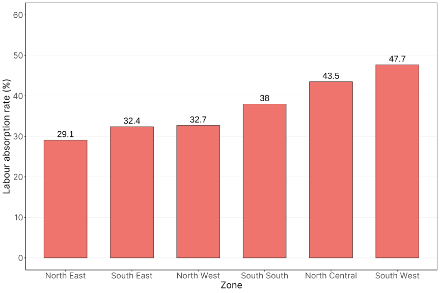

Labour Absorption and Employment Elasticities in Nigeria
Introduction
The ultimate goal of every nation is the well-being of its citizens regardless of its economic, political and social settings. This is reflected by economic development which dwells on growth and distributions as well as their interconnections. A distinctive strength of the informal sector especially its Micro and Small Enterprises (MSEs) is the effective and efficient absorption of labour and growth in employment.
Labour is an important factor that enables economic development through the production of goods and services and the satisfaction of individuals’ needs. Economic performance is a function of capital and labour. Economic indicators relating to employment, particularly those that evaluate a country’s ability to provide enough jobs for its people, can give you a lot of information about a country’s overall macroeconomic performance. Unemployment rates, employment-to-population ratios, and labour force participation rates are among the most generally discussed metrics along these lines. The employment intensity of growth or elasticity of employment with regard to output is another labour market indicator that indicates employment growth related to economic growth.
For a country like Nigeria, where unemployment rates keep rising and the population also increasing. It is important to understand the past and current employment and absorption capacity of the country as it can provide vital information that can be used for policymaking to curb unemployment.
Hence, it is of the essence that labour absorption and employment elasticities be studied. This analysis uses descriptive methods to analyze labour absorption and employment elasticities in Nigeria.
Labour Absorption
Labour absorption is the level at which the working population are engaged in economic activities at a particular period of time and the metric for labour absorption is “Labour Absorption Rate (LAR)” or “Employment to Population Ratio.”
According to the ILO database, the employment-to-population ratio expresses the number of persons who are employed as a percentage of the total working-age population. In other words, it is the proportion of the working-age population aged 15-65 years that is employed. It measures the proportion of the working-age population that is employed (Ozili 2020)
Mathematically,
\[ \textrm{Employment To Population Ratio}=\frac{\textrm{total Employed}}{\textrm{Working Age Population}} \times 100 \]
The labour absorption rate (LAR) in Nigeria has been on a continual decrease since 2014 with a significant decrease in 2020 as shown in figure 1 below. This shows that the working-age population is growing more compared to the levels of employment (working-age population addition yearly is over a million while for employment is in thousands). The significant decrease in 2020 can be attributed to the pandemic when a lot of jobs were lost and the working-age population kept increasing (Ozili 2020; PwC 2020).

Disaggregating LAR into full and part-time employment brings a better understanding of LAR as shown in figure 2 below. The fall in LAR for full-time employment followed the same pattern as the general LAR which is normal but interestingly part-time employment was on the increase with the exception of 2020, the pandemic year.
This is because, following the law governing demand and supply of labour, all things being equal “increase supply of labour leads to decrease in wages”. A decrease in wages implies a decrease in working hours hence increased part-time employment. Due to the increasing nature of the working population and employment increasing at a decreasing rate, the number of hours decreases as a reaction to decreasing in wages.

Further, in the analysis, LAR was disaggregated by zone. The descriptive showed nothing out of the normal as shown in figure 3 below. LAR are highest in the two economic zones in Nigeria where the economic hub and the Federal capital territory are located. South-South and North West follow closely with South-South being the domain of oil which is the primary source of revenue for the country and Northwest housing Kano, the business capital in the north. The Northwest has the lowest LAR and this is due to insecurity coupled with the pandemic of 2020 which has shut down most economic activities even agriculture has been disrupted. People are gradually bringing back economic activities and leaving Internal Displaced Persons Camps (IDP camps) to being farming

Employment Elasticity
Employment elasticity (EE) also called “Employment Intensity of Growth” is a measure of the percentage change in employment associated with a percentage point change in growth for a sector or total GDP. The employment elasticity indicates the ability of an economy to generate employment opportunities for its population as a percentage of its growth.
Employment is an important element of growth and development; it acts as a link between economic growth and poverty reduction. Employment elasticities are also frequently used to track industry potential for job creation and estimate future employment development.
Mathematically, EE is calculated in two ways;
1. The Compound Annual Growth Rate (CAGR) method: This method gives the “arc” employment elasticity, this is the elasticity of one variable in relation to another between two given points. It is calculated using the formula below
\[ e = \frac{\Delta L/L}{\Delta Y/Y} \]
Where L refers to employment, Y GDP and \(\Delta\) percentage change. Change in GDP is essentially GDP growth rate.
2. The Regression approach: This on the other hand provides the “point” elasticity, this is the elasticity at a specific point on the curve. It is calculated using the formula below
\[ ln L = \alpha + \beta lnY \]
Here, \(\beta\) serves as the employment elasticity. When the derivative is taken, we arrive at;
\[ e = \frac{dlnL}{dlnY} = \frac{\Delta L/L}{\Delta Y/Y} \]
In a nutshell, EE examines how economic growth (output) and employment evolve together over time. Looking at the EE of Nigeria from 2011 to 2022, EE growth has not been stable as shown below in figure 4. Employment elasticity in 2012, 2016 and 2017 was negative. In 2016 there was a recession and in 2017, Nigeria was still trying to get back on its feet. During a recession, economic growth becomes negative and industries will have to lay off workers or cut wages in other to survive. By 2018, the economy was booming. This shows that a 1 per cent increase in growth led to a 0.5 per cent increase in employment.
In 2021 after the pandemic, the economy was recovering from the pandemic shocks and different job opportunities were springing forth which include Artificial intelligence and data analytics which were majorly remote and the barrier for location was eliminated (Jenq, Lain, and Vishwanath 2021; WEF 2020). This explains why the employment elasticity was 7.4 per cent meaning for every 1 per cent increase in growth, employment increased by 7.4 per cent.

Discussion
It is evident from the above data that Nigeria is not doing well when it comes to employment generation and absorbing its working population. A high working-age population implies availability of labour which is an advantage when utilize will boost economic growth substantially. The continuous decrease in LAR means two things either the job creation level is not growing or the working-age population grows more than the level of employment creation, the latter seems to be most suitable. Another reason for the fall in LAR is the lack of skilled labour to be employed and the information asymmetry that exists in the labour market. Hence there is a need to encourage and build more vocational centers and improve the standard of education. To build an economy that has the capacity to absorb its labour, the quality and skills of workers need to be addressed because increased investment married with a skilled labour force will lead to economic growth and subsequently the creation of employment.
Also, EE figures indicate the existence of “jobless growth” which is a result of the slow pace of job creation in Nigeria. Jobless growth is a term used when there is continuous macroeconomic economic growth without a corresponding growth in job creation (PwC 2018). Major cause of jobless growth in Nigeria includes lack of diversification, poor economic restructuring, poor macroeconomic policies, e.t.c.
It is of the essence that government look into existing employment polices to ensure greater participation of youths. Government should focus on capital expenditure in order to increase the employment intensity of the private sector especially for MSMEs.